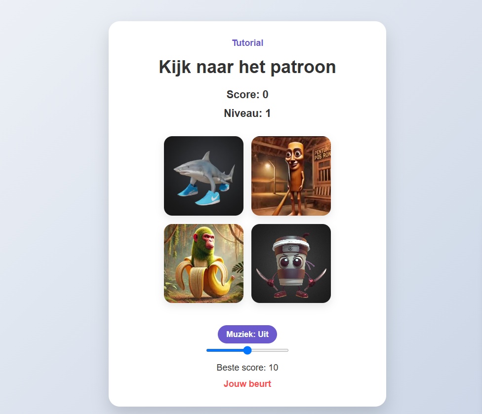

We gaan een leuk geheugenspel bouwen waarin je een patroon moet onthouden en herhalen!
Je zou de volgende mappenstructuur moeten zien:
Open index.html en kopieer de volgende code:
<!DOCTYPE html>
<html lang="nl">
<head>
<meta charset="UTF-8">
<meta name="viewport" content="width=device-width, initial-scale=1.0">
<link rel="stylesheet" href="styles/main.css">
<title>BrainRot Spel</title>
</head>
<body>
<div class="game-container">
<a href="tutorial.html" style="display: block; margin-bottom: 15px; color: #6A5ACD; text-decoration: none; font-weight: bold;">Tutorial</a>
<h1 id="game-title">Druk op een toets om te beginnen</h1>
<div id="score-display">Score: 0</div>
<div id="level-display">Niveau: 1</div>
<div class="buttons-container">
<button class="brainrot-button red" data-color="red">
<img src="src/assets/images/tralala.avif" alt="Image 1">
</button>
<button class="brainrot-button blue" data-color="blue">
<img src="src/ssets/images/tuntun.jpg" alt="Image 2">
</button>
<button class="brainrot-button yellow" data-color="yellow">
<img src="src/assets/images/chimpanzine.webp" alt="Image 3">
</button>
<button class="brainrot-button green" data-color="green">
<img src="src/assets/images/capuncion.jpeg" alt="Image 4">
</button>
</div>
<div class="controls">
<button id="start-button">Start</button>
<button id="restart-button">Herstart</button>
<div class="audio-control">
<button id="music-toggle">Muziek: Aan</button>
<input type="range" id="volume-slider" min="0" max="100" value="50">
</div>
</div>
<div class="info">
<p>Beste score: <span id="best-score">0</span></p>
<p id="game-message"></p>
</div>
</div>
<script src="https://ajax.googleapis.com/ajax/libs/jquery/3.7.0/jquery.min.js"></script>
<script src="scripts/index.js"></script>
</body>
</html>Maak een map 'styles' aan als deze nog niet bestaat, en maak daarin een bestand 'main.css'. Kopieer de volgende code:
* {
margin: 0;
padding: 0;
box-sizing: border-box;
}
body {
font-family: 'Poppins', sans-serif;
background: linear-gradient(135deg, #f5f7fa 0%, #c3cfe2 100%);
display: flex;
justify-content: center;
align-items: center;
min-height: 100vh;
color: #333;
}
.game-container {
background-color: #fff;
border-radius: 20px;
padding: 30px;
box-shadow: 0 15px 30px rgba(0, 0, 0, 0.15);
text-align: center;
max-width: 500px;
width: 90%;
}
#game-title {
font-size: 2rem;
margin-bottom: 20px;
color: #333;
transition: all 0.3s ease;
}
#score-display, #level-display {
font-size: 1.2rem;
margin-bottom: 10px;
font-weight: 600;
}
.buttons-container {
display: grid;
grid-template-columns: 1fr 1fr;
grid-template-rows: 1fr 1fr;
gap: 15px;
margin: 30px auto;
width: 300px;
height: 300px;
}
.brainrot-button {
border: none;
outline: none;
cursor: pointer;
border-radius: 15px;
transition: all 0.2s ease;
box-shadow: 0 5px 15px rgba(0, 0, 0, 0.1);
overflow: hidden;
padding: 0;
position: relative;
}
.brainrot-button img {
width: 100%;
height: 100%;
object-fit: cover;
display: block;
border-radius: 15px;
}
.brainrot-button:active {
transform: scale(0.95);
box-shadow: 0 2px 10px rgba(0, 0, 0, 0.1);
}
.lit-up {
filter: brightness(1.5) saturate(1.5);
transform: scale(1.05);
box-shadow: 0 0 20px rgba(255, 255, 255, 0.7);
}
.controls {
margin: 20px 0;
display: flex;
justify-content: center;
gap: 20px;
flex-wrap: wrap;
}
.audio-control {
display: flex;
flex-direction: column;
align-items: center;
margin-top: 10px;
width: 100%;
}
#music-toggle {
background-color: #6A5ACD;
color: white;
border: none;
padding: 8px 15px;
border-radius: 50px;
cursor: pointer;
font-size: 0.9rem;
font-weight: 600;
transition: all 0.2s ease;
margin-bottom: 10px;
}
#music-toggle:hover {
background-color: #8A7AED;
}
#volume-slider {
width: 150px;
height: 5px;
background: #d3d3d3;
outline: none;
border-radius: 5px;
}
#volume-slider::-webkit-slider-thumb {
-webkit-appearance: none;
appearance: none;
width: 15px;
height: 15px;
border-radius: 50%;
background: #6A5ACD;
cursor: pointer;
}
#volume-slider::-moz-range-thumb {
width: 15px;
height: 15px;
border-radius: 50%;
background: #6A5ACD;
cursor: pointer;
}
#start-button, #restart-button {
background-color: #333;
color: white;
border: none;
padding: 10px 20px;
border-radius: 50px;
cursor: pointer;
font-size: 1rem;
font-weight: 600;
transition: all 0.2s ease;
}
#start-button:hover, #restart-button:hover {
background-color: #555;
transform: translateY(-2px);
}
#start-button:active, #restart-button:active {
transform: translateY(0);
}
#restart-button {
background-color: #FF4C4C;
display: none;
}
#restart-button:hover {
background-color: #FF6666;
}
.info {
margin-top: 20px;
font-size: 1rem;
}
#game-message {
margin-top: 10px;
height: 20px;
color: #FF4C4C;
font-weight: 600;
}
.game-over {
animation: shake 0.5s ease-in-out;
}
@keyframes shake {
0%, 100% { transform: translateX(0); }
20%, 60% { transform: translateX(-10px); }
40%, 80% { transform: translateX(10px); }
}Maak een map 'scripts' aan als deze nog niet bestaat, en maak daarin een bestand 'index.js'. Kopieer de volgende code:
$(document).ready(function() {
let gamePattern = [];
let userPattern = [];
let gameStarted = false;
let level = 1;
let score = 0;
let bestScore = localStorage.getItem('brainrotBestScore') || 0;
let canClick = false;
let musicPlaying = true;
const gameTitle = $("#game-title");
const scoreDisplay = $("#score-display");
const levelDisplay = $("#level-display");
const bestScoreDisplay = $("#best-score");
const gameMessage = $("#game-message");
const startButton = $("#start-button");
const restartButton = $("#restart-button");
const buttons = $(".brainrot-button");
const musicToggle = $("#music-toggle");
const volumeSlider = $("#volume-slider");
const sounds = {
success: new Audio("src/assets/sounds/correct.mp3"),
wrong: new Audio("src/assets/sounds/wrong.mp3")
};
const backgroundMusic = new Audio("src/assets/sounds/game-song.mp3");
backgroundMusic.loop = true;
backgroundMusic.volume = 0.5;
const translations = {
start: "Druk op een toets om te beginnen",
level: "Niveau: ",
score: "Score: ",
bestScore: "Beste score: ",
gameOver: "Spel voorbij! Je score: ",
wrongMove: "Verkeerde zet!",
yourTurn: "Jouw beurt",
watchPattern: "Kijk naar het patroon",
musicOn: "Muziek: Aan",
musicOff: "Muziek: Uit"
};
function init() {
bestScoreDisplay.text(bestScore);
startButton.show();
restartButton.hide();
updateDisplay();
setupMusicControls();
}
function setupMusicControls() {
backgroundMusic.play().catch(function(error) {
console.log("Auto-play prevented: " + error);
musicPlaying = false;
musicToggle.text(translations.musicOff);
});
musicToggle.click(function() {
if (musicPlaying) {
backgroundMusic.pause();
musicPlaying = false;
musicToggle.text(translations.musicOff);
} else {
backgroundMusic.play();
musicPlaying = true;
musicToggle.text(translations.musicOn);
}
});
volumeSlider.on("input", function() {
const volume = $(this).val() / 100;
backgroundMusic.volume = volume;
});
}
function startGame() {
gameStarted = true;
gamePattern = [];
userPattern = [];
level = 1;
score = 0;
gameTitle.text(translations.watchPattern);
startButton.hide();
updateDisplay();
nextSequence();
}
function updateDisplay() {
scoreDisplay.text(translations.score + score);
levelDisplay.text(translations.level + level);
}
function nextSequence() {
userPattern = [];
gameMessage.text(translations.watchPattern);
canClick = false;
const colors = ["red", "blue", "yellow", "green"];
const randomColor = colors[Math.floor(Math.random() * 4)];
gamePattern.push(randomColor);
setTimeout(function() {
let i = 0;
const interval = setInterval(function() {
flashButton(gamePattern[i]);
i++;
if (i >= gamePattern.length) {
clearInterval(interval);
setTimeout(function() {
gameMessage.text(translations.yourTurn);
canClick = true;
}, 500);
}
}, 800);
}, 1000);
}
function flashButton(color) {
const button = $(`.brainrot-button[data-color="${color}"]`);
button.addClass("lit-up");
setTimeout(function() {
button.removeClass("lit-up");
}, 400);
}
function handleButtonClick() {
if (!gameStarted || !canClick) return;
const color = $(this).data("color");
userPattern.push(color);
flashButton(color);
checkAnswer();
}
function checkAnswer() {
const currentMove = userPattern.length - 1;
if (userPattern[currentMove] === gamePattern[currentMove]) {
if (userPattern.length === gamePattern.length) {
sounds.success.currentTime = 0;
sounds.success.play();
score += level * 10;
level++;
updateDisplay();
setTimeout(nextSequence, 1000);
}
} else {
gameOver();
}
}
function gameOver() {
sounds.wrong.currentTime = 0;
sounds.wrong.play();
gameTitle.text(translations.gameOver + score);
gameMessage.text(translations.wrongMove);
if (score > bestScore) {
bestScore = score;
localStorage.setItem('brainrotBestScore', bestScore);
bestScoreDisplay.text(bestScore);
}
$(".game-container").addClass("game-over");
setTimeout(function() {
$(".game-container").removeClass("game-over");
}, 500);
gameStarted = false;
restartButton.show();
canClick = false;
}
startButton.click(startGame);
restartButton.click(startGame);
buttons.click(handleButtonClick);
$(document).keydown(function(event) {
if (event.keyCode === 32) {
event.preventDefault();
}
if (!gameStarted) {
startGame();
}
});
init();
});Zorg ervoor dat je de volgende mappenstructuur hebt:
Plaats vier afbeeldingen in de src/assets/images/ map met de volgende namen:
Je kunt je eigen afbeeldingen gebruiken, maar zorg ervoor dat je de bestandsnamen in de HTML-code aanpast.
Plaats de volgende geluidsbestanden in de src/assets/sounds/ map:
Open het index.html bestand in je webbrowser. Je zou nu het volgende moeten zien:

Klik op de startknop of druk op een toets om het spel te beginnen. Onthoud het patroon en herhaal het om punten te verdienen!
Je kunt het spel naar wens aanpassen door de CSS-stijlen te wijzigen, nieuwe afbeeldingen toe te voegen of de JavaScript-code aan te passen.
Probeer bijvoorbeeld:
Je hebt met succes je eigen BrainRot-spel gemaakt! Veel plezier met spelen en delen met je vrienden.
Terug naar het spel